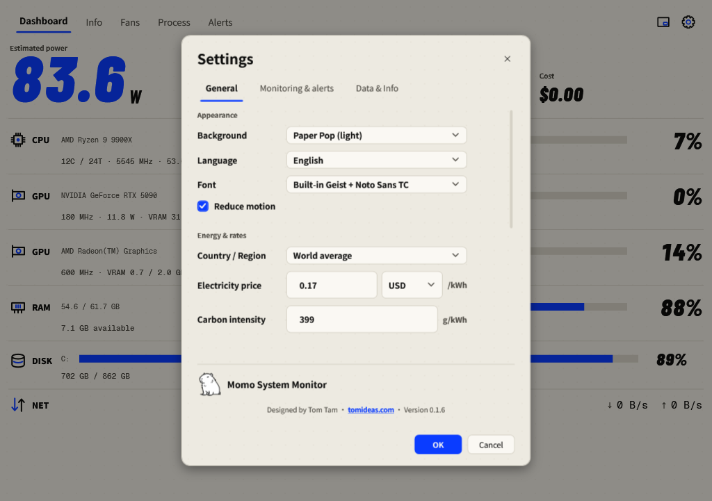

Power, energy & cost
Understand the measurement scope before comparing wattage, battery use or cumulative totals.
Start with the power label
| Power scope | What it includes | Limit |
|---|---|---|
| Estimated power | Available component sensors and supported estimates. | Coverage depends on hardware; this is not a wall-meter measurement. |
| CPU + GPU power | Available CPU/GPU telemetry or explicitly supplied GPU calibration. | Excludes the display, peripherals and adapter losses; used on notebooks and unknown chassis where desktop curves are inappropriate. |
| Battery discharge | Valid Windows battery-side discharge power. | Excludes adapter losses; requires supported absolute units and compatible battery states. |
| Estimated power at the wall | A supported desktop estimate including the configured power-supply losses. | Depends on PSU information and estimation; a physical wall meter is needed to measure AC input. |
Energy, carbon and electricity cost
Power (W) is the current rate of consumption. Energy (Wh or kWh) accumulates that rate over valid monitoring time. At 100 W for one monitored hour, energy is 100 Wh, or 0.1 kWh. At $0.20/kWh, that interval costs $0.02; at 400 g/kWh, it represents 40 g of carbon emissions.
Sleep, suspend/resume and long sampling gaps break integration. Momo does not fill sleeping hours with the last observed wattage. Read the coverage note for recorded monitoring time, missing-power time and mixed scopes. Older records may have no coverage metadata.
Set your rates
- Open Settings → General.
- Choose Country / Region to fill electricity price, currency and carbon intensity together.
- Adjust Electricity price and Carbon intensity to your own assumptions. Manual adjustments select Custom.
- Press OK. Read the period label when comparing Energy, Carbon and Cost.

Configure a supported desktop PSU estimate
In Settings → Monitoring & alerts, scroll to Whole-machine power at the wall. Enable Count the power supply’s losses, then enter the PSU rated watts and its efficiency class from the supply label. Press OK. This is optional and off by default; do not apply a desktop PSU assumption to notebook adapter power.
An unrecognised GPU
If a GPU cannot report power or its power limit, a board-power field may appear in Settings. Enter that specific card’s documented board power or leave it empty. The field accepts 1–1000 W. Calibration is an estimate, not new sensor telemetry.
Per-process watts
Process power is attributed from CPU/GPU activity; it is not separately measured at each application. Use it to compare active workloads within a session. Process attribution and totals should be interpreted with the current machine-power scope.